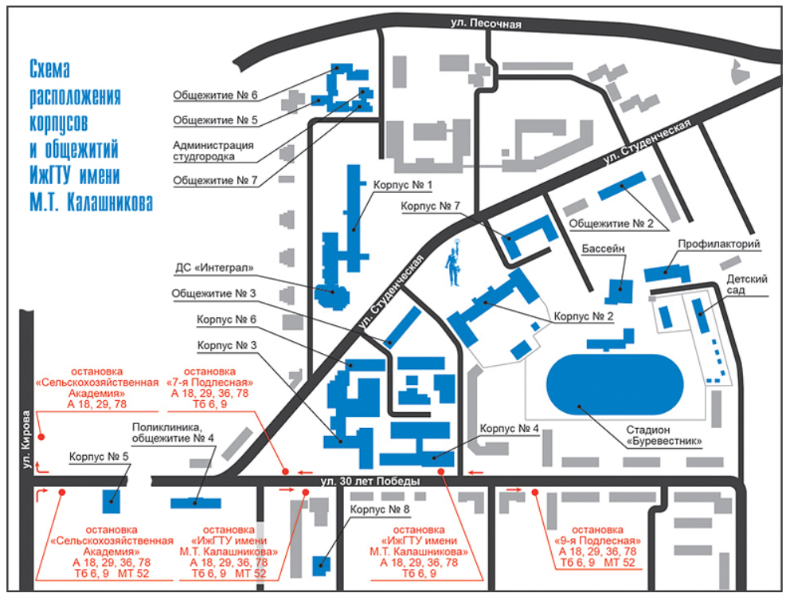

Студенческий городок |
||
| Новости |
На протяжении полувека университет компактно располагается на живописной окраине Ижевска. Кампус начинался с одного учебного корпуса (сейчас корпус № 2) и одного общежития для студентов. Сегодня это целый комплекс учебных корпусов, общежитий, развитая сеть общественного питания, комплекс спортивных сооружений (стадион, плавательный бассейн, спортивные залы). Для решения вопросов здоровья в распоряжении студентов и сотрудников университета поликлиника и профилакторий. Особую роль в жизни вуза играют студенческий центр «Интеграл» и учебно-спортивный центр «Галево», расположенный на берегу Камы.

|
Ссылки/Реклама |
| © Все права защищены | ||